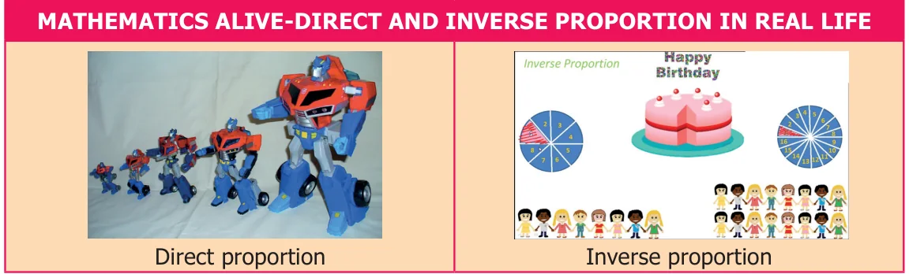

\(= y_{1} y_{2}\)
Chapter
4 PROPORTION \(\frac{x1x2}{yy} _{1} = _{2}\)
DIRECT AND INVERSE
Learning objectives
- ●To recall the concept of ratio and proportion.
- ●To understand the concept of direct and inverse proportion.
- ●To be able to differentiate direct proportion and inverse proportion.
- ●To solve application problems using direct and inverse proportion.
Recap Ratio and Proportion
In class VI we have learnt ratio and proportion. Let us recall them now. Ratio is the comparison of two quantities of the same kind. If the quantity 'a' is compared with the quantity 'b', the ratio can be written in the form a : b (read as a is to b) When two ratios a : b and c : d are equal then we say that the ratios are in proportion. This is denoted as a : b : : c : d and it is read as ‘a is to b is as c is to d’. In a : b : : c : d, product of the means is equal to product of the extremes, that is bc = ad.
Try these
- 1.Find the ratio of the number of circles to number of squares.
- 2.Find the ratio (i) 555 g to 5 kg (ii) 21 km to 175 m
- 3.Find the value of ‘x’ in the following proportions.
- (i)110 : x : : 8 : 88 (ii) x : 26 : : 5 : 65
4.1 Introduction
We come across many situations in day-to-day life where we see a change in one quantity brings a change in the other quantity. Let us learn more about the concept of variation that helps us to handle situations efficiently. Now, let us consider such situations which we come across in every day life. We consider the task of cleaning a school,
- (i)when more number of students are involved, the time taken to clean will be
less.
- (ii)when the number of students are more, the work done will also be more.
In the first case, number of students is compared with time taken and in the second case, the number of students is compared with the amount of work. The quantities taken for comparison decides the type of variation.
SituationSituation 1 Manimala prepares vegetable soup for her family of 4 members. She uses 2 cup of vegetables, 600 ml of water, 1 teaspoon of salt and \(\frac{1}{2}\) teaspoon of pepper. Suddenly her aunt and uncle join them. What would be the change in quantities of the ingredients to prepare soup for all the six members? SituationSituation 2 In a military camp there are 200 soldiers. Grocery for them are available for 40 days. If 50 more soldiers join them, how long will these grocery last? In the above situations a change in one quantity results in the corresponding change in other quantity. That is in situation 1, more the number of members, more will be the quantity of items. In situation 2, the more number of soldiers in the group, the grocery needed will be more and so it will last for less number of days. In these situations when one quantity varies that brings a change in other quantity in two ways, that is,
- (i)both the quantities increase or decrease.
- (ii)increase in one quantity causes decrease in the other quantity or vice-versa.
If such quantities varies in constant ratio, they are said to be in proportion. Two different variations give rise to two types of proportion which will be discussed now.
